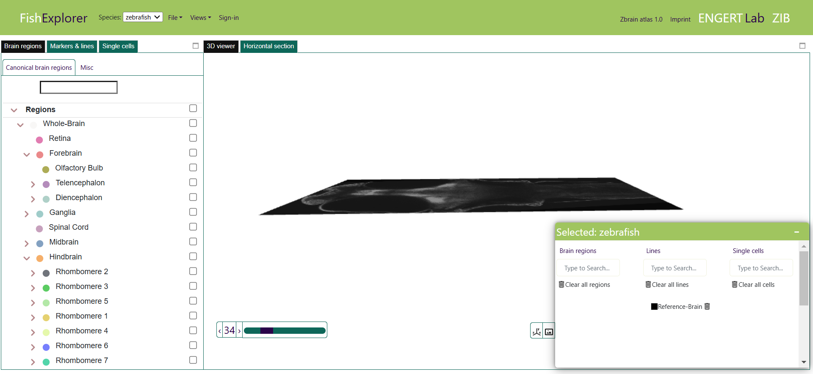
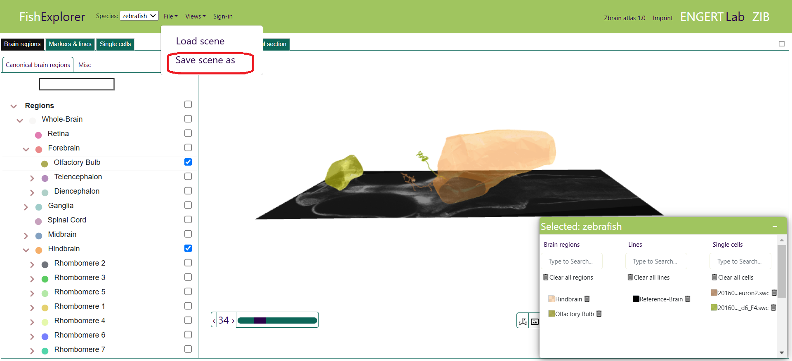
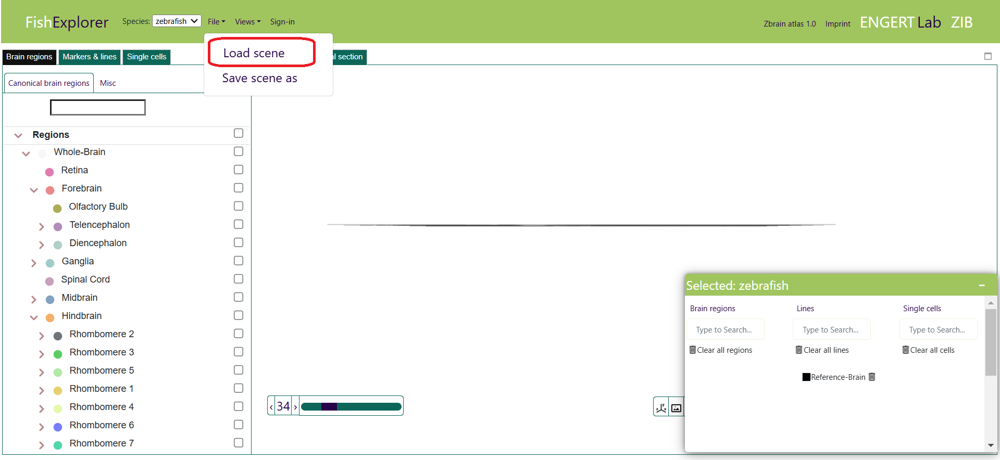
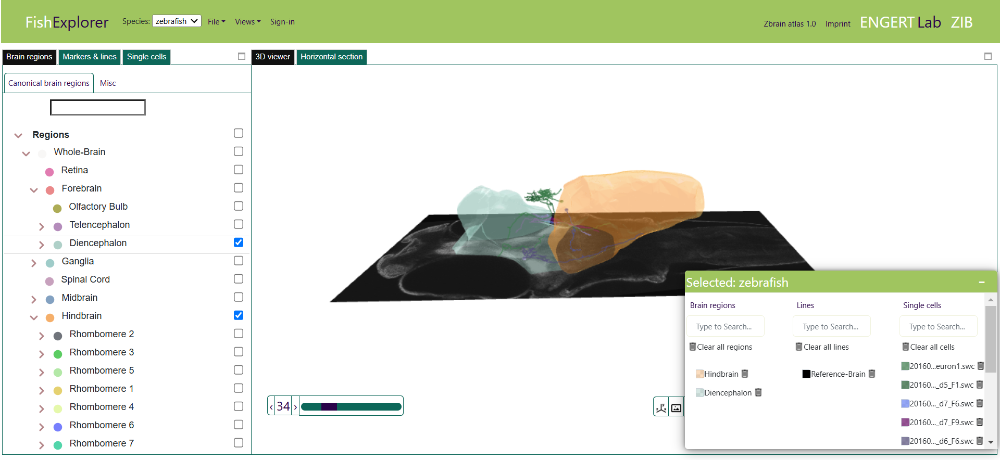
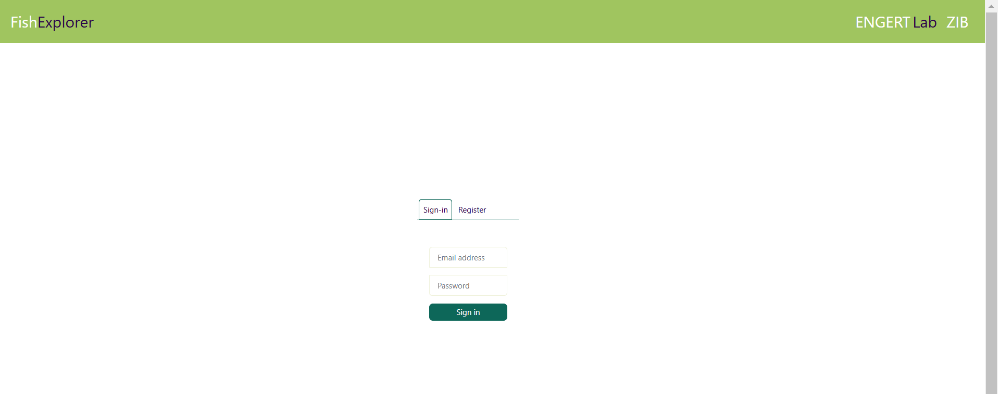
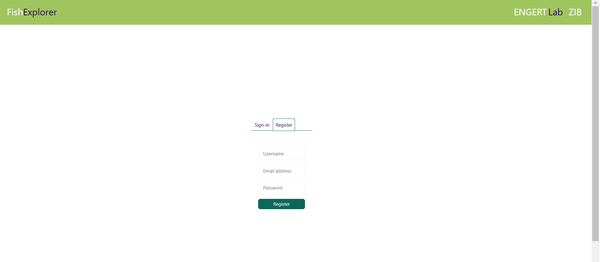

Getting started
- FishExplorer is a JavaScript-based visualization platform and can therefore be used in any modern browser without installing software. Currently, a database server at ZIB (Zuse Institute Berlin) is used as the backend. In the future, it will be possible to connect to other data servers using a login mechanism. At the ZIB database server, only the zebrafish and medaka reference frames are currently available. Further data can be made available after integration to our dataset in the near future.
-
System requirements: The minimal requirements for running FishExplorer are a webGL compatible device and Google Chrome browser. The rest depends on the type of data users want to load.
The requirements mentioned below are sufficient enough to load most of the FishExplorer data.
- WebGL version: WebGl 1.0 and 2.0
- Browser: Google Chrome (The platform is well tested on Google Chrome. We suggest that users use Google Chrome for the best experience). We will support further major browsers in the near future.
- Memory: 16 GB or 32 GB
- Browser memory: ~200 - 400 MB (all brain regions and ~2000 neurons cell morphologies can easily be rendered with 400 MB of browser memory)
- Operating system: Windows 10+11, Linux, MacOS (no support for android or iOS devices)
- Processor: 32 or 64 bit
- In this section, you will learn how to
- Save the current scene
- Load the scene
- Invoke viewers for loading data i.e 3d viewer, sagittal section etc
-
When FishExplorer is started, a window like the one shown below appears on the screen, The top
region
page is divided into three main parts: “Files”, “Views” and “Sign-in”.

-
Tab "File"
The submenu in the tab "File" consists of two entries: “Save scene as” and “Load scene”, where a 'scene' describes the current visualization
and analysis status in the brain atlas platform.
Saving the scene allows the user to reproduce a previous state of visualization and data analysis.
- The Save scene as: entry allows users to store the current state of the project locally usings metadata
about brain regions, cells and morphologies (as shown in the image below).

- The Load scene entry allows users to load locally stored visualization and analysis states into the platform.

As a test case, the user can load this project file (as shown in the image below). The list of brain regions, cells and morphologies mentioned in the project file will be loaded.
- The Save scene as: entry allows users to store the current state of the project locally usings metadata
about brain regions, cells and morphologies (as shown in the image below).
-
Tab “Sign-in”
Users can create custom accounts and keep their data in their private directory until
they are ready to share them with the community.
(We believe in open science but in order to generate quality results, one needs to iteratively perform behavior experiments, segment regions, mark cells, compare results etc.)
Working in a private account will secure your data in privacy.
To create user a private account, please follow the steps described below:
-
Restart FishExplorer by hitting the refresh button of the browser.
Then, click the “Sign-in” button in the top bar in the default window, as shown in the image below.

-
As a result, the sign-in page, as shown in the image below, will appear.
Login with your credentials, or, if you are a first-time user, register before signing-in.

-
Click the “Register” tab (encircled red in the image above).
As a result, the register page, as shown in the image below, will appear.
Please provide username, email address and password for registration.

-
Restart FishExplorer by hitting the refresh button of the browser.
Then, click the “Sign-in” button in the top bar in the default window, as shown in the image below.
-
Tab “Help”
It provides general information about the platform. Also, it offers tutorials that explain how users can easily browse brain regions, markers and single cells. And we have a tutorial for image stacks registration.